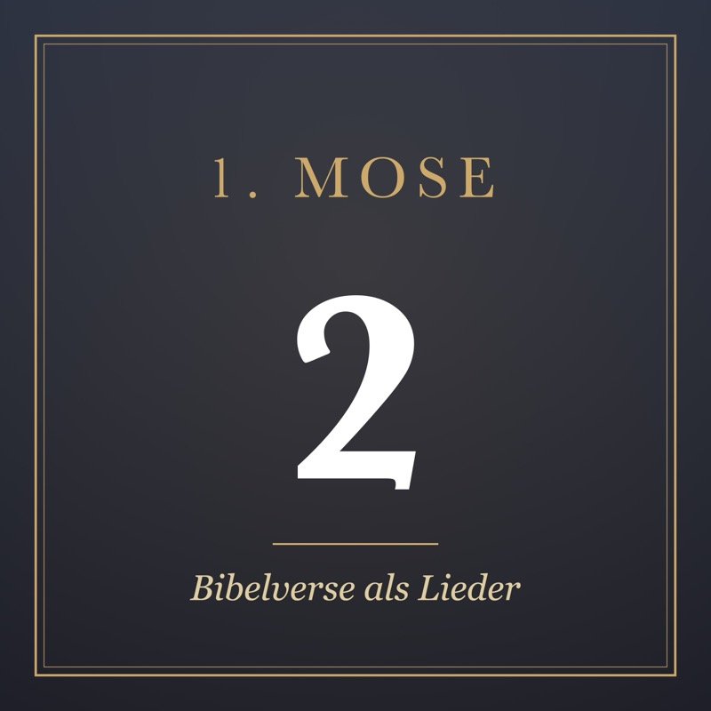
1. Mose 2 DE
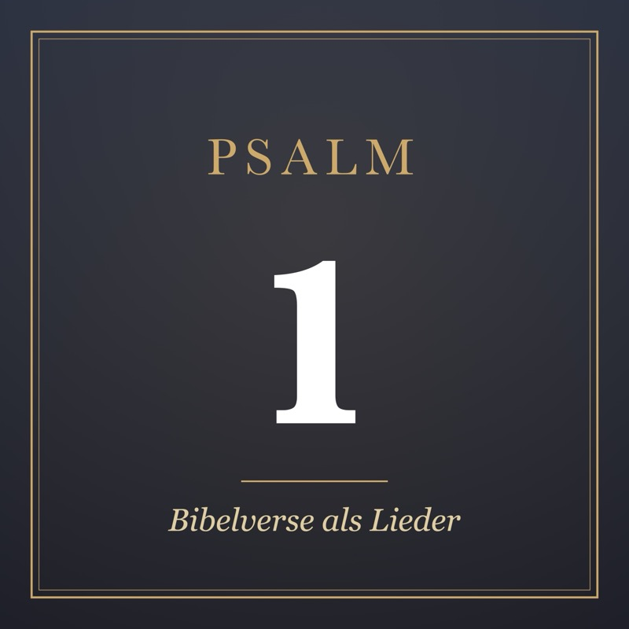
Psalm 1 DE
Psalm 8 DE
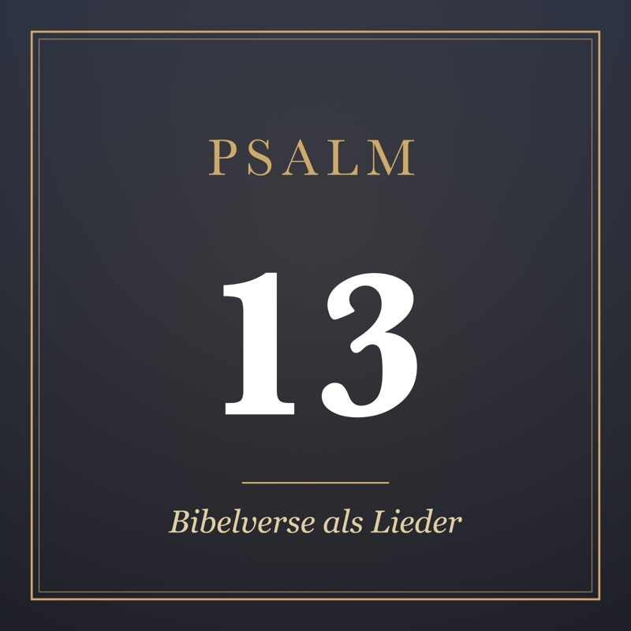
Psalm 13 DE
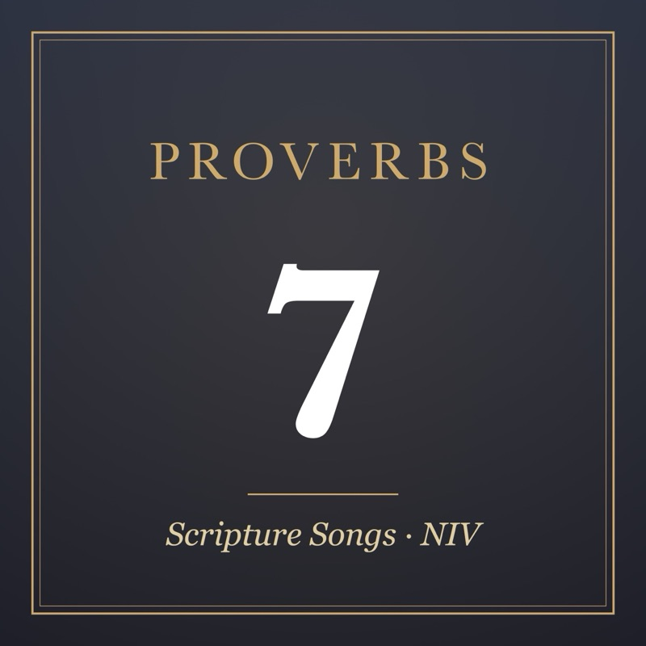
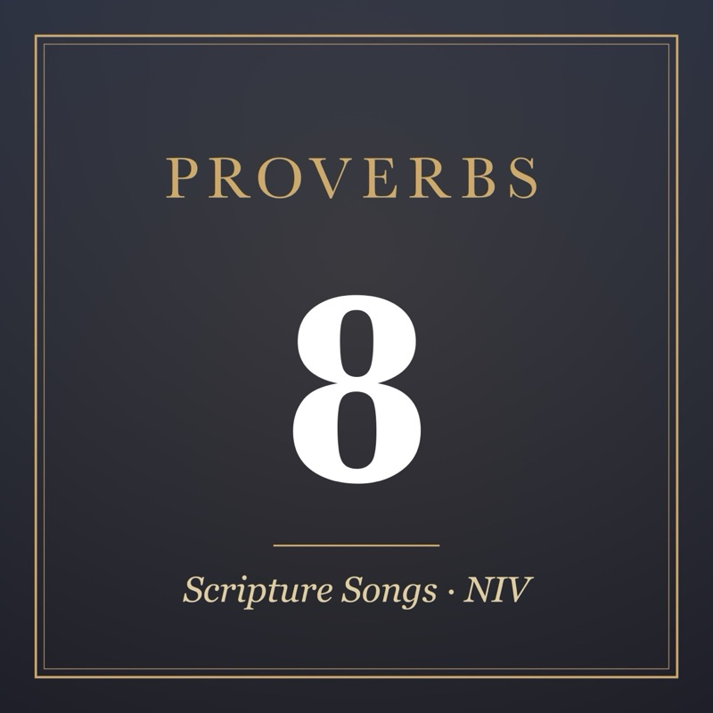
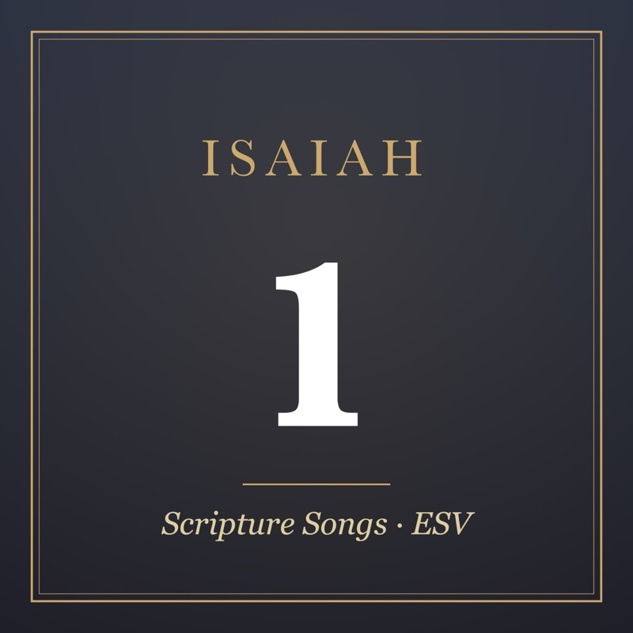
Isaiah 1 EN
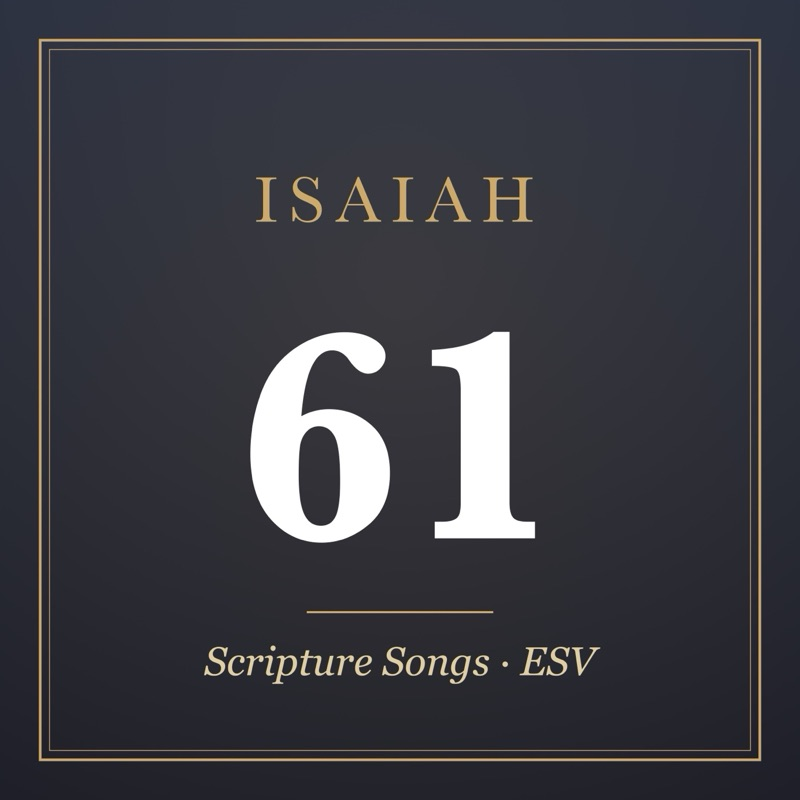
Isaiah 61 EN
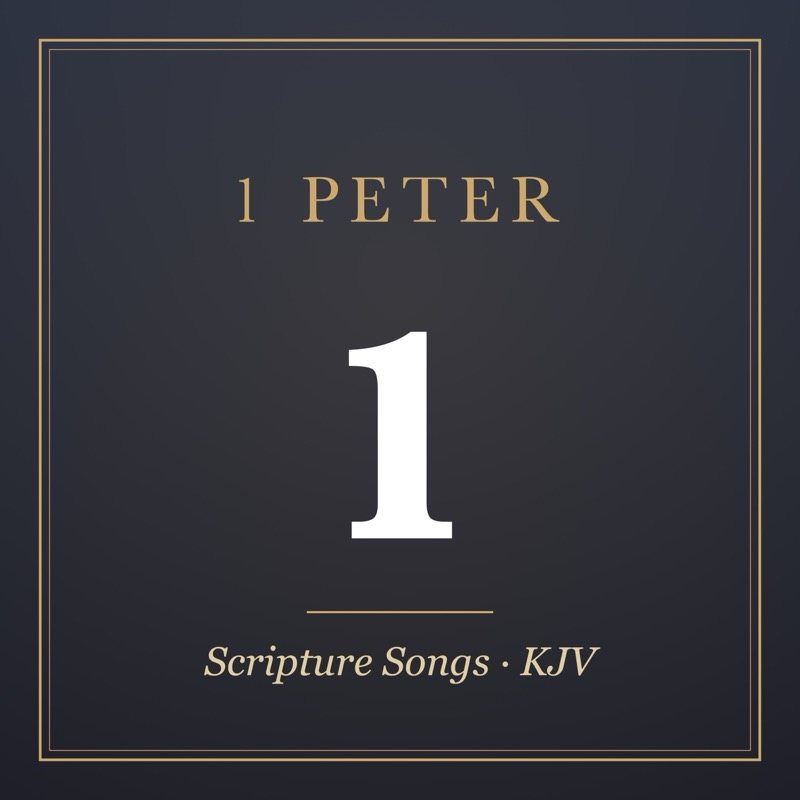
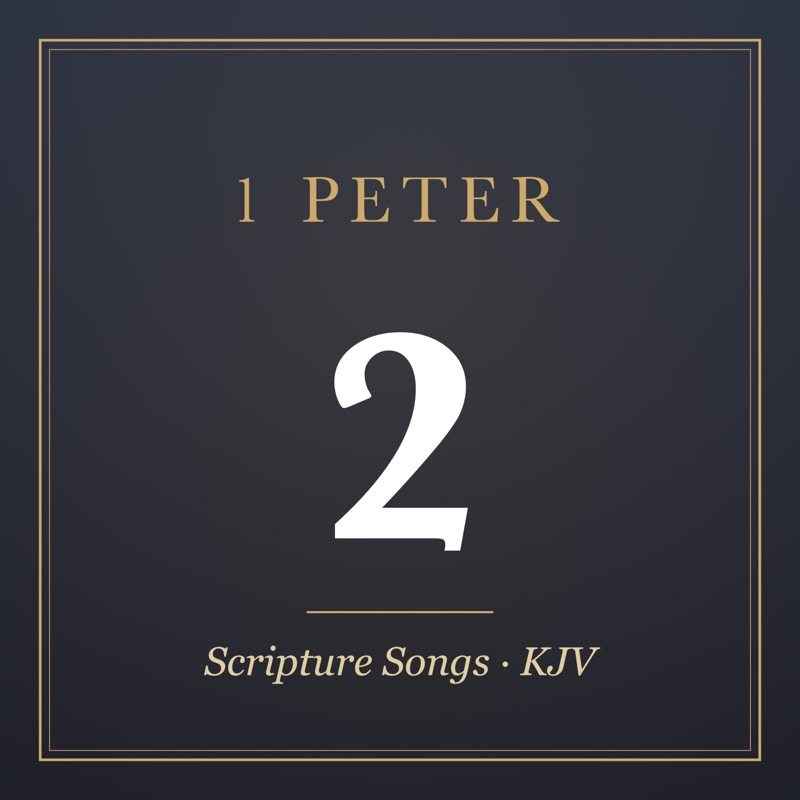
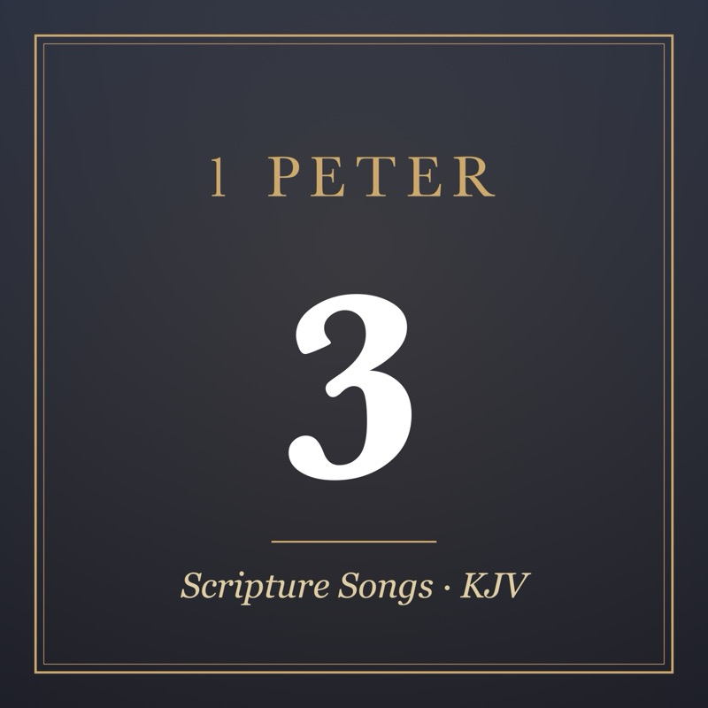
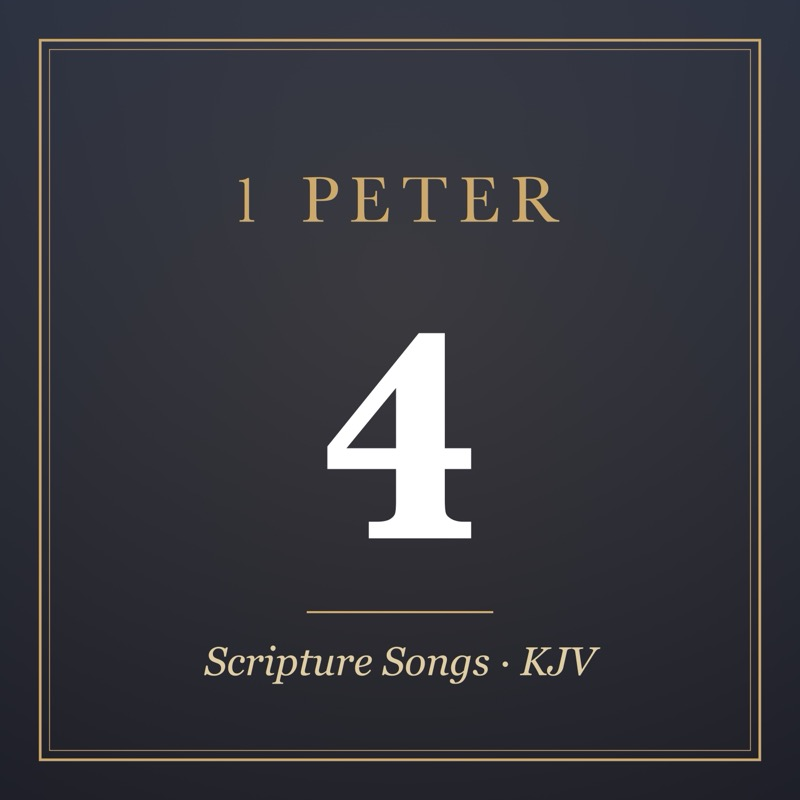
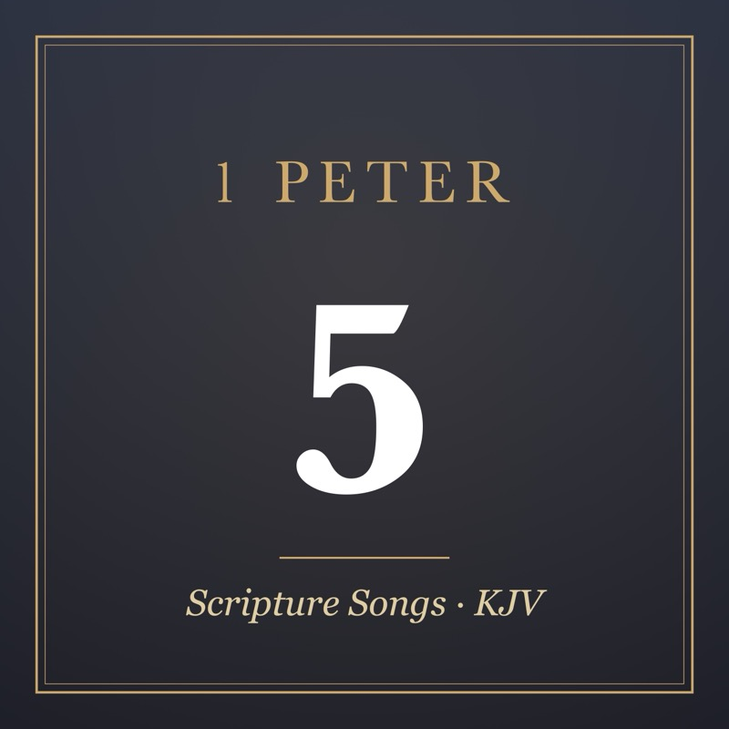
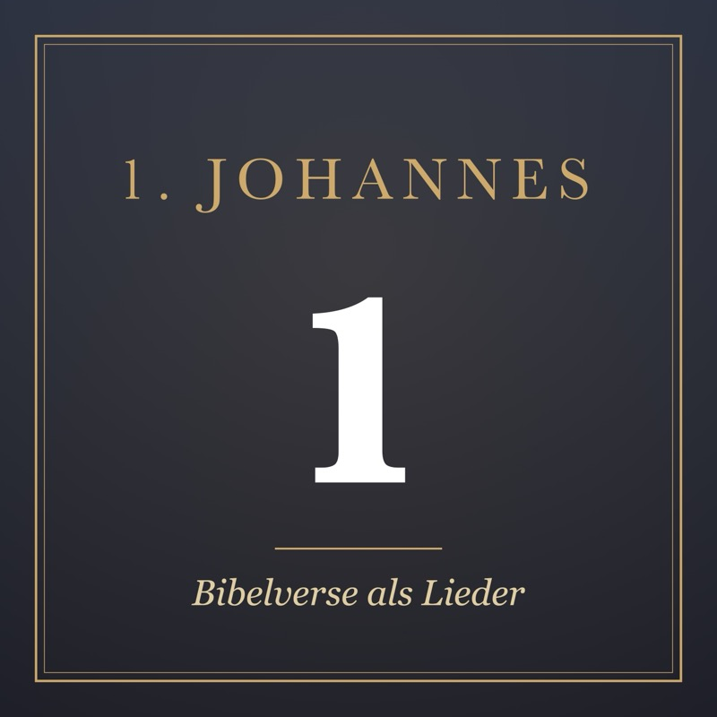
1. Johannes 1 DE
About these songs
The lyrics are the Bible verses themselves, just as we memorized them: the New International Version for Proverbs, the English Standard Version for Isaiah, the King James Version for 1 Peter, and German translations for the German songs. We made the music with the help of AI (Suno). You're welcome to listen to, download and share these songs for free – for memorizing Scripture at home, in a small group or at church.
Die Lieder dürfen gerne kostenlos angehört, heruntergeladen und weitergegeben werden – zum Auswendiglernen, in der Familie, im Hauskreis oder in der Gemeinde.
The files are AAC (.m4a) and play on iPhone, Android, Mac and Windows.
Scripture quotations taken from The Holy Bible, New International Version® NIV®. Copyright © 1973, 1978, 1984, 2011 by Biblica, Inc.™ Used by permission. All rights reserved worldwide. Scripture quotations are from the ESV® Bible (The Holy Bible, English Standard Version®), copyright © 2001 by Crossway, a publishing ministry of Good News Publishers. Used by permission. All rights reserved.